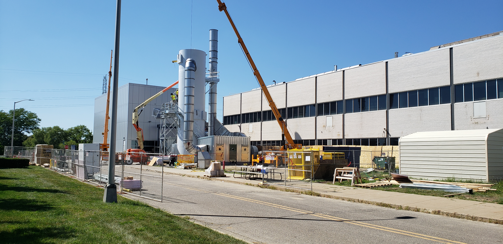

BTSI Lab Systems Integration : 2020-08-21 Meeting notes
Created by Paul Rabahy, last updated on Aug 21, 2020
Date
Attendees
Goals

Discussion items
| Time | Item | Who | Notes |
|---|
| 9:35 | HB numbers new IO racks | | |
| 9:45 | Handling stalled issues | Paul Rabahy | - What is the best way to handle issues that are done but not tested?
-
 BTSIR-243
-
ET1B Baseline Support - Pack Checkout / Vetting
Closed
for background. BTSIR-243
-
ET1B Baseline Support - Pack Checkout / Vetting
Closed
for background.
- Please make use of "Waiting for Third Party" and "Pending" are available.
- Please also make additional tasks in Jira an mark them as blocking the PQMS support ticket.
- Reach out to Chelsea for help if needed.
- We really need to start using sprints in the future (Paul Rabahy!)
|
| 10:02 | Master is broken | Keya Wang | - Can't finish sysinit. Might be related to patches not being installed.
- TC01B has that commented out for now.
- Paul Rabahy remind Jim on Monday
|
| 10:07 | On call | | - Getting calls at 4am
- Andy McMichael said that China and USA get the calls at the same time.
- He was following up on calls that China resolved because sometimes they were resolved without investigation
- Other people haven't been answering
|
Action items
{kind=link}